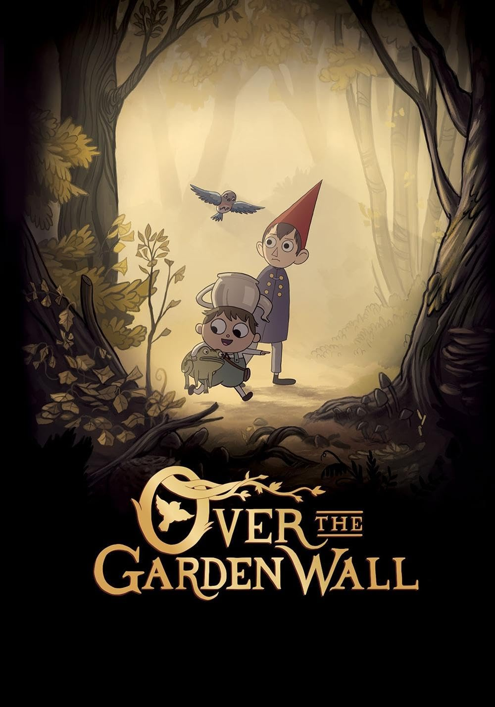
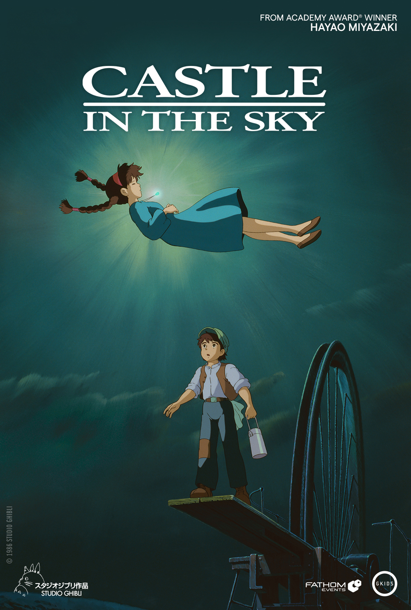
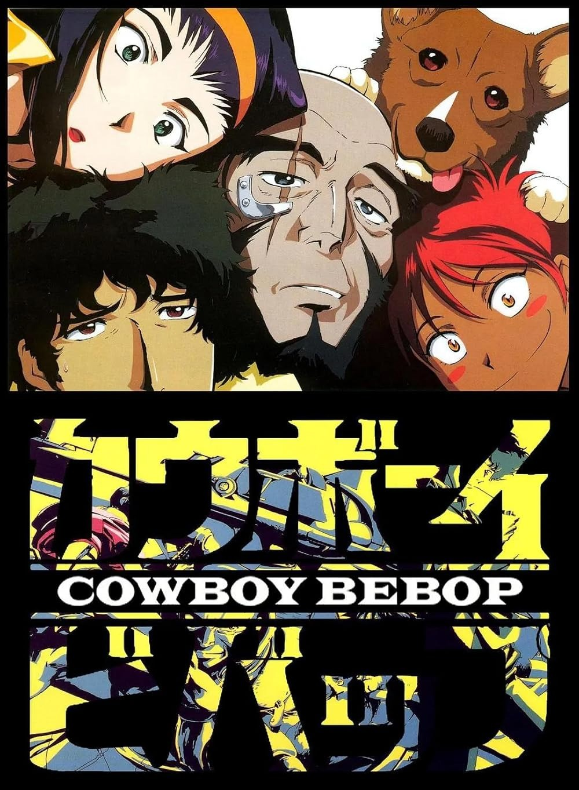

My name is Devin Bush I am 21 years old, I am a student here at MSU and I am working towards a field in Digital Storytelling.
If you can recognize this brick texture, then there is a spinning banana.gif awaiting recieval in your inbox

I have written quite a few scripts since my time being here. I also have worked with friends and their projects helping them weave a narrative into their worlds. I always like to challenge myself with my writing, trying genres I may be uncomfortable with, practicing basics of storytelling to help me along the way.
I have been trying to diversify my literature by trying manga almost 6 years ago and I was blown away with the medium. It really helped to show me how important it is to lean into the strengths of the medium you are working with. I also have been reading books for a long time and I love trying new authors and finding really old and cared for books and giving them a new home in my collection.

There is a wide range of Indie Animation from 2d/3d old and new as well as some short films made by future industry titans
The Second Short fully Stop-Motion Animated by Trey Parker and Matt Stone, creators of South Park on Comedy Central
Student Film from Jim Reardon, a future writer at Pixar who eventually worked on Wall-E
Student Film created by Maxwell Atoms filmed on a WWII era 16mm Camera, he would eventually use this foundation to create The Grim Adventure's of Billy and Mandy on Cartoon Network

Over The Garden Wall is my favorite show I have every watched. It aired on Cartoon Network in 2014, just recently celebrating their 10th anniversary! They even celebrated with Cartoon Network with a Stop-Motion Short HERE that was made by Aardman Animation that captures the feeling of the show. Please, out of the shows I reccomend, I consider Over The Garden Wall essential viewing

This is one of the first Ghibli Movies, released in 1986, it is a stunning reminder of the power animation can bring to a film. This film was completely Cel Animated and a stunning work by one of the greats. It is a fun action comedy with a very fun Ghibli flare. I would reccomend most Myazaki movies but this is definately my favorite from his vast catalogue of cinematic Gold

Cowboy Bebop is an old anime that released in the early 2000's, it is my favorite show when I am thinking about environmental storytelling, character progression, and the importance of an aesthetic. It is an incredibly fun anime that I would highly recommend especially if you are interested in the medium of tv stoeytelling

If you have not noticed, most of these films have a theme. i have a very passionate love for animation/animating. This movie is very important for a lot of reasons, but for me it is one of the most beutiful animated movies I have ever seen, and the fact it is all physical art with Cel animating and mat paintings for all of the background. This is not a perfect movie, but the environments feel lived in, the city is living, every character is so expressive and every character has perfect acting with each other